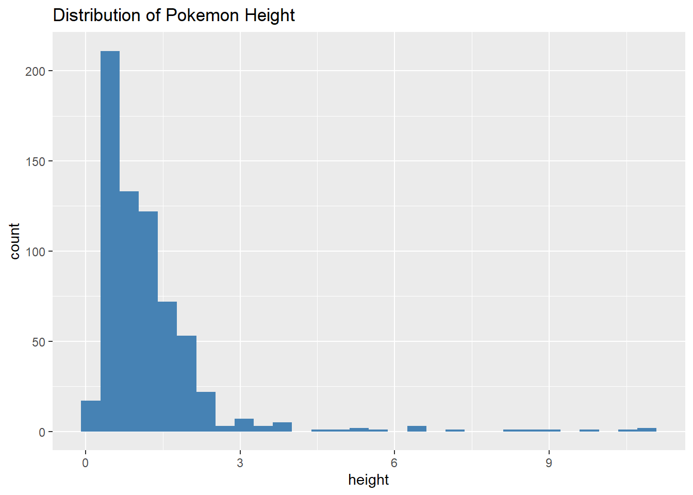
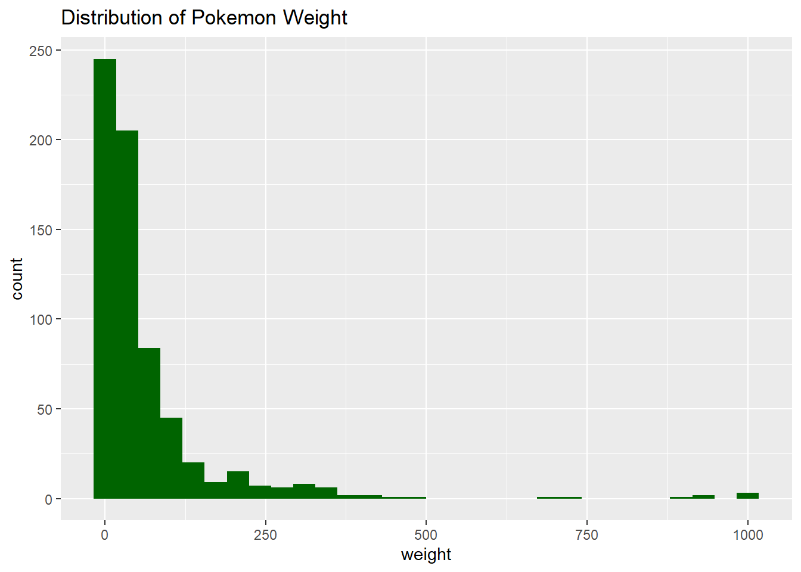
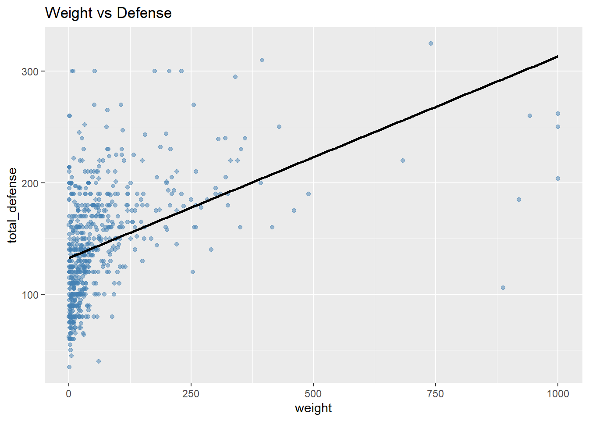
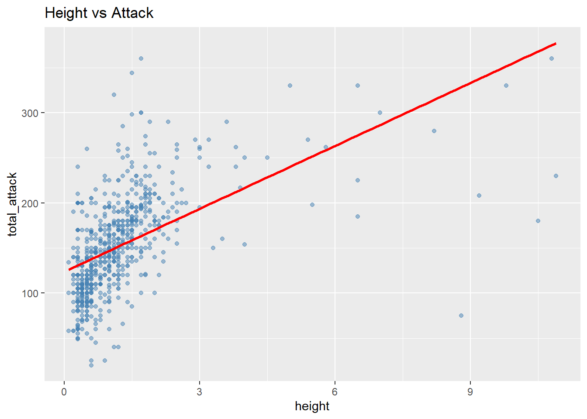

library(pokemon)
library(dplyr)
library(ggplot2)
library(tidymodels)Do Physical Characteristics Predict Battle Characteristics in Pokemon?
Summary
This project investigates whether physical characteristics such as height and weight are associated with battle performance in Pokemon. Using exploratory data analysis, clustering techniques, and supervised learning models, the analysis explored relationships between physical size and offensive or defensive battle statistics. The results showed that larger and heavier Pokemon generally tend to have higher attack and defensive capabilities, but physical size alone does not fully determine battle strength. A K-nearest neighbors (KNN) regression model outperformed a linear regression model, suggesting that the relationship between physical and battle characteristics is nonlinear and influenced by additional gameplay factors.
Motivation and Context
This project investigates whether physical characteristics such as height and weight are associated with battle performance in Pokemon. In the Pokemon games, players often perceive larger or heavier Pokemon as naturally stronger because of their appearance and physical design. However, actual gameplay frequently demonstrates that smaller Pokemon can still perform extremely well depending on factors such as speed, typing, abilities, and stat distribution.
The goal of this project is to determine whether physical characteristics truly predict offensive and defensive battle performance, or whether physical size only tells part of the story. To investigate this question, exploratory data analysis, clustering methods, and supervised learning models were used to analyze relationships between physical size and battle-related statistics.
This topic is interesting because Pokemon provides a large and diverse dataset with many different character designs and stat distributions. The analysis also connects statistical learning techniques to a familiar gaming environment, making the results easier to interpret in a real-world context.
Packages Used In This Analysis
This section lists the packages used in the analysis. You should have a single chunk that loads the packages followed by a description of why you are using each package. Please use individual package names rather than tidyverse and tidymodels, to make it clear which specific packages are being used.
| Package | Use |
|---|---|
| pokemon | Used to access the Pokemon dataset |
| dplyr | Used for data wrangling and creating new variables |
| ggplot2 | Used to create data visualizations and plots |
| tidymodels | Used for machine learning workflows, model fitting, tuning, and evaluation |
Data Description
The dataset used in this project contains information on 949 Pokemon and 22 variables. Each observation represents a single Pokemon, and the variables include physical characteristics such as height and weight as well as battle-related statistics such as hp, attack, defense, special attack, special defense, and speed.
The data was obtained from the pokemon R package, which provides a curated dataset of Pokemon attributes collected from publicly available Pokemon databases. The dataset includes Pokemon from multiple generations and contains a wide range of variables suitable for statistical learning and exploratory analysis.
The goal of this project is to explore whether physical characteristics such as height and weight are associated with offensive and defensive battle performance. To investigate this question, additional variables representing overall offensive and defensive strength were created during the data wrangling stage.
data("pokemon")
glimpse(pokemon)Rows: 949
Columns: 22
$ id <dbl> 1, 2, 3, 4, 5, 6, 7, 8, 9, 10, 11, 12, 13, 14, 15, 16,…
$ pokemon <chr> "bulbasaur", "ivysaur", "venusaur", "charmander", "cha…
$ species_id <dbl> 1, 2, 3, 4, 5, 6, 7, 8, 9, 10, 11, 12, 13, 14, 15, 16,…
$ height <dbl> 0.7, 1.0, 2.0, 0.6, 1.1, 1.7, 0.5, 1.0, 1.6, 0.3, 0.7,…
$ weight <dbl> 6.9, 13.0, 100.0, 8.5, 19.0, 90.5, 9.0, 22.5, 85.5, 2.…
$ base_experience <dbl> 64, 142, 236, 62, 142, 240, 63, 142, 239, 39, 72, 178,…
$ type_1 <chr> "grass", "grass", "grass", "fire", "fire", "fire", "wa…
$ type_2 <chr> "poison", "poison", "poison", NA, NA, "flying", NA, NA…
$ hp <dbl> 45, 60, 80, 39, 58, 78, 44, 59, 79, 45, 50, 60, 40, 45…
$ attack <dbl> 49, 62, 82, 52, 64, 84, 48, 63, 83, 30, 20, 45, 35, 25…
$ defense <dbl> 49, 63, 83, 43, 58, 78, 65, 80, 100, 35, 55, 50, 30, 5…
$ special_attack <dbl> 65, 80, 100, 60, 80, 109, 50, 65, 85, 20, 25, 90, 20, …
$ special_defense <dbl> 65, 80, 100, 50, 65, 85, 64, 80, 105, 20, 25, 80, 20, …
$ speed <dbl> 45, 60, 80, 65, 80, 100, 43, 58, 78, 45, 30, 70, 50, 3…
$ color_1 <chr> "#78C850", "#78C850", "#78C850", "#F08030", "#F08030",…
$ color_2 <chr> "#A040A0", "#A040A0", "#A040A0", NA, NA, "#A890F0", NA…
$ color_f <chr> "#81A763", "#81A763", "#81A763", NA, NA, "#DE835E", NA…
$ egg_group_1 <chr> "monster", "monster", "monster", "monster", "monster",…
$ egg_group_2 <chr> "plant", "plant", "plant", "dragon", "dragon", "dragon…
$ url_icon <chr> "//archives.bulbagarden.net/media/upload/7/7b/001MS6.p…
$ generation_id <dbl> 1, 1, 1, 1, 1, 1, 1, 1, 1, 1, 1, 1, 1, 1, 1, 1, 1, 1, …
$ url_image <chr> "https://raw.githubusercontent.com/HybridShivam/Pokemo…Data Wrangling (Optional Section)
The dataset required several preprocessing and feature engineering steps before analysis. New variables were created to summarize offensive and defensive battle characteristics. In addition, the data was split into training and testing sets so that predictive models could be evaluated on unseen observations.
set.seed(123)
pokemon_split <- initial_split(
pokemon,
prop = 0.7
)
pokemon_train <- training(pokemon_split)
pokemon_test <- testing(pokemon_split)
pokemon_train <- pokemon_train |>
mutate(
total = hp + attack + defense +
special_attack + special_defense + speed,
total_attack = attack + special_attack,
total_defense = defense + special_defense
)
pokemon_test <- pokemon_test |>
mutate(
total = hp + attack + defense +
special_attack + special_defense + speed,
total_attack = attack + special_attack,
total_defense = defense + special_defense
)Exploratory Data Analysis
ggplot(pokemon_train,
mapping = aes(x = height)
) +
geom_histogram(bins = 30,
fill = "steelblue") +
labs(title = "Distribution of Pokemon Height")
The distribution of Pokemon height is strongly right-skewed, indicating that most Pokemon are relatively small in height while a smaller number are extremely tall. The majority of Pokemon appear to have heights below 2 units, with only a few observations extending far beyond the main distribution. This suggests that very large Pokemon are uncommon and may represent unique or specialized Pokemon designs.
ggplot(pokemon_train,
mapping = aes(x = weight)
) +
geom_histogram(bins = 30,
fill = "darkgreen") +
labs(title = "Distribution of Pokemon Weight")
The distribution of Pokemon weight is heavily right-skewed, indicating that most Pokemon have relatively low weights while a small number are extremely heavy. The majority of observations are concentrated near the lower end of the distribution, with several large outliers extending far to the right. This suggests that very heavy Pokemon are uncommon and may represent specialized or physically dominant Pokemon designs.
ggplot(pokemon_train,
mapping = aes(x = total)
) +
geom_histogram(bins = 30,
fill = "purple") +
labs(title = "Distribution of Total Stats")
The distribution of total stats shows that most Pokemon fall within the range of approximately 350 to 550 total points, with the highest concentration near 450 to 500. The distribution appears moderately right-skewed due to a smaller number of Pokemon with exceptionally high total stats. This suggests that while most Pokemon have moderate overall battle capabilities, a limited number stand out as significantly stronger than the majority.
ggplot(pokemon_train,
aes(x = weight, y = total_attack)) +
geom_point(alpha = 0.5,
color = "firebrick") +
geom_smooth(method = "lm",
se = FALSE,
color = "black") +
labs(title = "Weight vs Attack")`geom_smooth()` using formula = 'y ~ x'
The relationship between weight and attack shows a moderate positive trend, as heavier Pokemon generally tend to have higher attack values. However, the large spread of points indicates that weight alone does not fully determine offensive strength. While some heavier Pokemon exhibit very high attack stats, there are also lighter Pokemon with strong offensive capabilities. This suggests that physical size may contribute to attack power, but other design and gameplay factors also play important roles.
#|label: Weight vs. Defense
ggplot(pokemon_train,
aes(x = weight, y = total_defense)) +
geom_point(alpha = 0.5,
color = "steelblue") +
geom_smooth(method = "lm",
se = FALSE,
color = "black") +
labs(title = "Weight vs Defense")`geom_smooth()` using formula = 'y ~ x'
The relationship between weight and defense also appears to show a positive association, with heavier Pokemon generally tending to have higher defensive stats. Compared to the attack plot, the relationship appears slightly more consistent, suggesting that larger Pokemon may be designed to fulfill bulkier or more defensive battle roles. However, there is still substantial variability, indicating that weight is not the sole factor influencing defensive performance.
#|label: Height vs. Attack
ggplot(pokemon_train,
aes(x = height, y = total_attack)) +
geom_point(alpha = 0.5,
color = "steelblue") +
geom_smooth(method = "lm",
se = FALSE,
color = "red") +
labs(title = "Height vs Attack")`geom_smooth()` using formula = 'y ~ x'
The relationship between height and attack shows a moderate positive association, with taller Pokemon generally tending to have higher attack values. The upward trend in the regression line suggests that physical size may contribute to offensive strength. However, the large spread of points indicates that height alone is not a perfect predictor of attack, as many Pokemon with similar heights exhibit different offensive capabilities.
pokemon_train <- pokemon_train |>
mutate(weight_group = case_when(
weight < 50 ~ "Light",
weight < 150 ~ "Medium",
TRUE ~ "Heavy"
))
ggplot(pokemon_train,
mapping = aes(x = weight_group,
y = attack,
fill = weight_group)) +
geom_boxplot() +
labs(title = "Attack Distribution by Weight Group",
x = "Weight Group",
y = "Attack")
To further investigate the relationship between physical and battle characteristics, Pokemon were grouped into light, medium, and heavy weight categories and their attack distributions were compared. The results suggest that heavier Pokemon generally tend to have higher attack values, with the heavy weight group showing the highest median attack. Although variability exists within each group, the overall trend indicates a positive relationship between physical size and offensive strength.
The relationship plots between weight, height, and battle statistics also revealed moderate positive associations between physical size and attack or defense. In particular, heavier Pokemon tended to exhibit stronger defensive and offensive capabilities, while the relationship between weight and speed appeared much weaker. These findings suggest that physical characteristics may influence certain battle attributes, although they do not fully determine overall battle performance.
Overall, the exploratory analysis indicates that physical characteristics such as height and weight are moderately associated with battle characteristics, especially attack and defense. Larger and heavier Pokemon generally tend to exhibit stronger offensive and defensive capabilities, although substantial variability across the data suggests that battle performance is influenced by multiple factors beyond physical size alone. These findings motivate further analysis using clustering and predictive modeling to better understand how physical and battle characteristics interact across different Pokemon.
Modeling
For the modeling portion of this project, I used K-nearest neighbors regression to predict total attack from Pokemon height and weight. This model was chosen because it allows for a flexible, non-linear relationship between physical characteristics and offensive battle strength.
KNN regression works by finding the closest observations in the training data and using their values to make a prediction. The main tuning parameter is the number of neighbors, often called (k). Smaller values of (k) can make the model more flexible, while larger values of (k) create smoother predictions.
pokemon_folds <- vfold_cv(
pokemon_train,
v = 5
)
knn_recipe <- recipe(
total_attack ~ height + weight,
data = pokemon_train
) |>
step_normalize(all_predictors())
knn_model <- nearest_neighbor(
mode = "regression",
neighbors = tune()
) |>
set_engine("kknn")
knn_wflow <- workflow() |>
add_model(knn_model) |>
add_recipe(knn_recipe)
#Tune KNN
knn_grid <- tibble(
neighbors = seq(1, 51, by = 5)
)
knn_tune <- tune_grid(
knn_wflow,
resamples = pokemon_folds,
grid = knn_grid,
metrics = metric_set(rmse, rsq)
)
knn_tune |>
collect_metrics()# A tibble: 22 × 7
neighbors .metric .estimator mean n std_err .config
<dbl> <chr> <chr> <dbl> <int> <dbl> <chr>
1 1 rmse standard 54.6 5 2.43 Preprocessor1_Model01
2 1 rsq standard 0.274 5 0.0216 Preprocessor1_Model01
3 6 rmse standard 42.4 5 1.20 Preprocessor1_Model02
4 6 rsq standard 0.417 5 0.0131 Preprocessor1_Model02
5 11 rmse standard 41.4 5 1.21 Preprocessor1_Model03
6 11 rsq standard 0.436 5 0.00998 Preprocessor1_Model03
7 16 rmse standard 40.9 5 1.27 Preprocessor1_Model04
8 16 rsq standard 0.447 5 0.00944 Preprocessor1_Model04
9 21 rmse standard 40.8 5 1.29 Preprocessor1_Model05
10 21 rsq standard 0.450 5 0.0102 Preprocessor1_Model05
# ℹ 12 more rowsThe KNN model was tuned using 5-fold cross-validation. Different values of the number of neighbors were tested, and model performance was evaluated using RMSE and R-squared. RMSE measures prediction error, so lower values are better. R-squared measures how much variation in total attack is explained by the model.
knn_tune |>
autoplot()
The tuning results show that prediction error decreases quickly as the number of neighbors increases from 1, then begins to stabilize around moderate values of (k). This suggests that using more than one neighbor helps reduce overfitting, but adding too many neighbors does not dramatically improve the model.
best_k <- select_best(knn_tune, metric = "rmse")
final_knn_wflow <- finalize_workflow(
knn_wflow,
best_k
)
knn_fit <- fit(
final_knn_wflow,
data = pokemon_train
)
knn_predictions <- knn_fit |>
augment(new_data = pokemon_test)
metrics(
knn_predictions,
truth = total_attack,
estimate = .pred
)# A tibble: 3 × 3
.metric .estimator .estimate
<chr> <chr> <dbl>
1 rmse standard 38.4
2 rsq standard 0.451
3 mae standard 30.4 The final KNN regression model achieved an RMSE of approximately 38 and an R-squared value of approximately 0.45 on the test set. This means that height and weight explain a moderate amount of the variation in total attack, but they do not fully determine offensive strength.
Conclusion
Overall, the results of this project suggest that physical characteristics such as height and weight do have a meaningful relationship with battle characteristics in Pokemon, particularly offensive and defensive strength. Larger and heavier Pokemon generally tended to have higher attack and defense values, while smaller Pokemon were more likely to fall into lower-stat groups during the clustering analysis.
However, the relationships observed were only moderate rather than overwhelming. This reflects an important aspect of the Pokemon games themselves. Players may initially assume that larger Pokemon are automatically stronger because of their appearance and physical design, but actual gameplay often shows that smaller Pokemon can still be extremely effective due to speed, typing, abilities, and strategic stat distributions.
The supervised learning analysis reinforced this idea. Although the KNN regression model outperformed linear regression and explained approximately 45% of the variation in total attack, more than half of the variation remained unexplained by height and weight alone. This suggests that physical size contributes to battle performance, but does not fully determine overall strength.
Overall, the project demonstrates that Pokemon effectiveness is influenced by a combination of physical characteristics, stat specialization, and gameplay mechanics rather than size alone.
Limitations and Future Work
One limitation of this project is that the supervised learning analysis focused primarily on offensive capability through the use of total attack as the response variable. Although the exploratory analysis suggested that larger Pokemon also tend to exhibit stronger defensive characteristics, defense was not modeled directly in the final predictive analysis.
Another limitation is that height and weight alone cannot fully explain Pokemon battle performance. Important gameplay factors such as typing, abilities, move sets, and battle strategy were not included in the models. This likely explains why a large portion of the variation in total attack remained unexplained even in the stronger KNN model.
Additionally, the KNN regression model assumes that Pokemon with similar physical characteristics should also have similar offensive capabilities. While this assumption captured some meaningful patterns, the predicted versus actual plot still showed noticeable spread around the prediction line, indicating that the model struggles to perfectly predict battle strength from physical characteristics alone.
Future work could include incorporating additional gameplay variables, building predictive models for defensive performance, comparing results across Pokemon generations, or exploring more advanced machine learning methods.